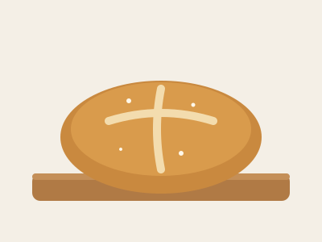

The Starter
A starter is fed flour and water every day. When it doubles in size a few hours after feeding, it's strong enough to bake with.
Notes from a first-year baker who has burned more loaves than I'd like to admit.

I started baking sourdough during a long winter break because I wanted a hobby that didn't involve a screen. Sourdough uses a starter, a living mix of flour, water, and wild yeast, instead of yeast from a packet.
It's slow, a little unpredictable, and very satisfying when it works. This page collects what I've learned so far.
Three ideas made everything else make sense for me.
A starter is fed flour and water every day. When it doubles in size a few hours after feeding, it's strong enough to bake with.
Hydration is the weight of water compared to the weight of flour. Beginners should start around 70%. Wetter dough is harder to shape.
Dough rises faster in a warm kitchen and slower in a cold one. Watch the dough, not the clock.
The order matters here, so this is an ordered list.